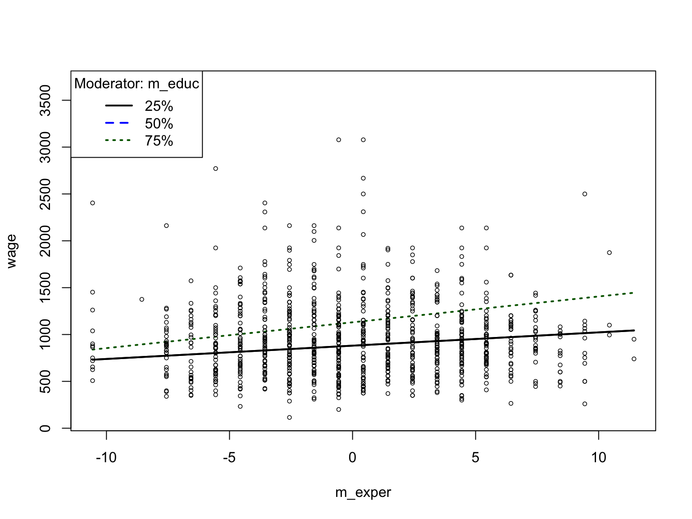

9日目 : ミニレポート
データの説明
Wooldridge “Introductory Econometrics: A Modern Approach”のデータセットを利用して、分析の練習をします。 RでWooldridgeテキストのデータセットが利用できるようになるパッケージwooldridgeを用います。 今回は，このwooldridgeパッケージに収録されているwage2を用いるので、以下のように必要なパッケージをpacmanパッケージのp_load()関数で読み出して、data()関数でwage2を読み込みます。
データセットのうち，以下の変数を用いる。
-
wage: 月収（ドル） 今回の従属変数 -
hours: 平均週労働時間 -
IQ: IQスコア -
educ: 教育年数 -
exper: 経験年数 -
tenure: 勤続変数 -
age: 年齢 -
married: 結婚ダミー -
black: 黒人ダミー -
south: 南部在住ダミー -
sibs: きょうだいの人数 -
brthord: 出生順 -
meduc: 母の教育 -
feduc: 父の教育
このデータセットwage2を用いて，賃金(wage)(月収でドル)を従属変数とした次の分析を行います。
- 主たる独立変数を1つ選ぶ（連続変数から選ぶ）
- 別の独立変数を4つ以上選ぶ（連続変数とダミー変数を少なくとも1つずつ選ぶ）
- 従属変数と独立変数(合計5個以上)の相関行列を作成する。ただし，係数のみ記載すれば良い（有意水準のアスタリスクはいらない）。
- 以下の回帰分析を行い，表にまとめる。
- モデル1：賃金と主たる独立変数の単回帰分析
- モデル2：賃金と独立変数(5個以上)の重回帰分析
- モデル3：独立変数とダミー変数の交互作用項を加えた重回帰分析を行う。中心化は行わなくてもよい。
- 交互作用項を図示する
- 結果を文章で説明する。
相関行列
いきなり回帰分析をするのではなく、まずは変数間の関係を確認するために、wage2に収録されている変数間の相関係数行列を作成します。 基本関数cor()とcorrplotパッケージのcorrplot()関数を用いて相関行列の表を作成します。
この表より，賃金wageと強い線形関係がある変数には，IQ，knowledge of world of work score KWW、教育年数educ，父親の教育年数feduc，母親の教育年数meducがあることが分かりました。
単回帰分析
1つの変数で1つの変数を説明する単回帰分析をやってみます。 ここでは、賃金wageを従属変数，教育年数educを独立変数とした次の回帰モデルを推定します。
wage_i = \beta_0 + \beta_1 educ_i + \varepsilon_i
回帰モデルを推定するためには、lm()関数を用います。 lm()関数は引数として、 - formula：回帰モデルの数式 - data：データフレーム
を指定します。
Call:
lm(formula = wage ~ educ, data = wage2)
Residuals:
Min 1Q Median 3Q Max
-877.38 -268.63 -38.38 207.05 2148.26
Coefficients:
Estimate Std. Error t value Pr(>|t|)
(Intercept) 146.952 77.715 1.891 0.0589 .
educ 60.214 5.695 10.573 <2e-16 ***
---
Signif. codes: 0 '***' 0.001 '**' 0.01 '*' 0.05 '.' 0.1 ' ' 1
Residual standard error: 382.3 on 933 degrees of freedom
Multiple R-squared: 0.107, Adjusted R-squared: 0.106
F-statistic: 111.8 on 1 and 933 DF, p-value: < 2.2e-16賃金を教育年数で回帰した結果、教育年数educの回帰係数は 60.214 となっており、教育年数が1年増えるごとに、賃金が60.214ドル増加することが分かりました。
重回帰分析
次に，賃金wageを従属変数，教育年数educ，経験年数exper，IQIQ，黒人ダミーblackを独立変数とした重回帰分析を行います。 交互作用項として使用する教育年数，経験年数，IQは，各変数から平均値を引いた中心化を行います。 これにより、交互作用項の解釈が容易になります。
\begin{aligned} wage_i &= \beta_0 + \beta_1 educ_i + \beta_2 exper_i + \beta_3 IQ_i + \beta_4 black_i + \varepsilon_i\\ wage_i &= \beta_0 + \beta_1 educ_i + \beta_2 exper_i + \beta_3 IQ_i + \beta_4 black_i + \beta_5 IQ_i \times black_i + \varepsilon_i \end{aligned}
Call:
lm(formula = wage ~ m_educ + m_exper + m_IQ + black + d_edu,
data = wage2)
Residuals:
Min 1Q Median 3Q Max
-913.56 -243.75 -40.85 191.04 2117.19
Coefficients:
Estimate Std. Error t value Pr(>|t|)
(Intercept) 976.567 14.179 68.874 < 2e-16 ***
m_educ 60.157 8.682 6.929 7.93e-12 ***
m_exper 17.221 3.110 5.537 4.00e-08 ***
m_IQ 3.871 1.004 3.856 0.000123 ***
black -130.750 39.177 -3.337 0.000879 ***
d_edu -17.746 51.773 -0.343 0.731859
---
Signif. codes: 0 '***' 0.001 '**' 0.01 '*' 0.05 '.' 0.1 ' ' 1
Residual standard error: 368.9 on 929 degrees of freedom
Multiple R-squared: 0.172, Adjusted R-squared: 0.1675
F-statistic: 38.59 on 5 and 929 DF, p-value: < 2.2e-16上記の重回帰モデルに，経験年数experと結婚marriedの交差項を組み込み，交互作用の検証を行います。 交差項を組み込むには、m_educ:m_experのように:を用いて交差項を指定します。
Call:
lm(formula = wage ~ m_educ + m_exper + m_IQ + black + m_educ:m_exper,
data = wage2)
Residuals:
Min 1Q Median 3Q Max
-942.72 -244.63 -36.63 184.96 2106.38
Coefficients:
Estimate Std. Error t value Pr(>|t|)
(Intercept) 989.104 14.434 68.528 < 2e-16 ***
m_educ 62.348 7.204 8.654 < 2e-16 ***
m_exper 19.098 3.205 5.959 3.6e-09 ***
m_IQ 3.778 0.998 3.786 0.000163 ***
black -128.900 39.059 -3.300 0.001003 **
m_educ:m_exper 3.342 1.437 2.326 0.020255 *
---
Signif. codes: 0 '***' 0.001 '**' 0.01 '*' 0.05 '.' 0.1 ' ' 1
Residual standard error: 367.9 on 929 degrees of freedom
Multiple R-squared: 0.1767, Adjusted R-squared: 0.1722
F-statistic: 39.87 on 5 and 929 DF, p-value: < 2.2e-16stargazerパッケージを用いて、3つの分析結果をまとめた表を作成します。
stargazer(reg01, reg02, reg03, # 回帰分析の結果
digits = 2,
digits.extra = 0,
align = TRUE,
omit.table.layout = 'n', # IMPORTANT!!!
keep.stat = c('n', 'adj.rsq', 'f'),
df = FALSE,
type = 'html'
)| Dependent variable: | |||
| wage | |||
| (1) | (2) | (3) | |
| educ | 60.21*** | ||
| (5.69) | |||
| m_educ | 60.16*** | 62.35*** | |
| (8.68) | (7.20) | ||
| m_exper | 17.22*** | 19.10*** | |
| (3.11) | (3.20) | ||
| m_IQ | 3.87*** | 3.78*** | |
| (1.00) | (1.00) | ||
| black | -130.75*** | -128.90*** | |
| (39.18) | (39.06) | ||
| d_edu | -17.75 | ||
| (51.77) | |||
| m_educ:m_exper | 3.34** | ||
| (1.44) | |||
| Constant | 146.95* | 976.57*** | 989.10*** |
| (77.71) | (14.18) | (14.43) | |
| Observations | 935 | 935 | 935 |
| Adjusted R2 | 0.11 | 0.17 | 0.17 |
| F Statistic | 111.79*** | 38.59*** | 39.87*** |
rockchalkパッケージのplotSlopes()関数を使って交互効果を図にすると次のようになります。
plotSlopes(reg03, modx = "m_educ", plotx = "m_exper")